PHYS598500 · Week 4 · T2-4
Noise, Fluxonium, and Protected-Qubit Design
Operators, matrix elements, and Hamiltonian engineering
Josephson junction
Josephson junction As a Nonlinear Inductor

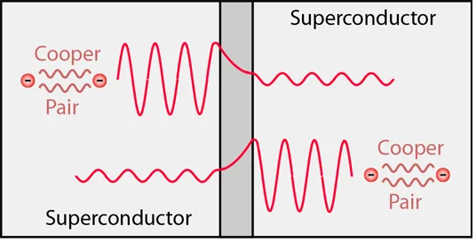

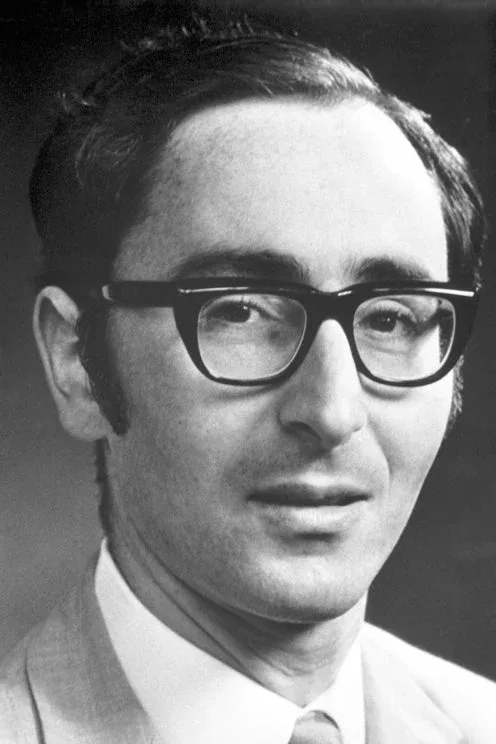
Predicted phase-driven supercurrent tunneling in 1962.
\[I=I_c\sin\varphi\]
\[\dot\varphi=\frac{2eV}{\hbar}\]
\[
\begin{aligned}
L_J(\varphi)
=\frac{\Phi_0}{2\pi I_c\cos\varphi}
\end{aligned}
\]
Source and image: HyperPhysics, “Josephson Junction”.
Symmetric SQUID · step 1 of 2
The loop fixes the relative junction phase

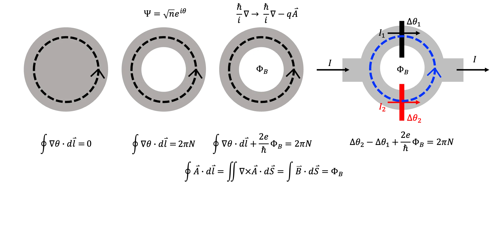
\[
\Phi_0 \equiv\frac{h}{2e},
\qquad \frac{2e}{\hbar}=\frac{2\pi}{\Phi_0}, \qquad
\Delta\theta_2=\Delta\theta_1
-2\pi\frac{\Phi_B}{\Phi_0}+2\pi N
\]
Symmetric SQUID · step 2 of 2
SQUID
\[
I=I_1+I_2
=I_c\sin\Delta\theta_1+I_c\sin\Delta\theta_2
\]

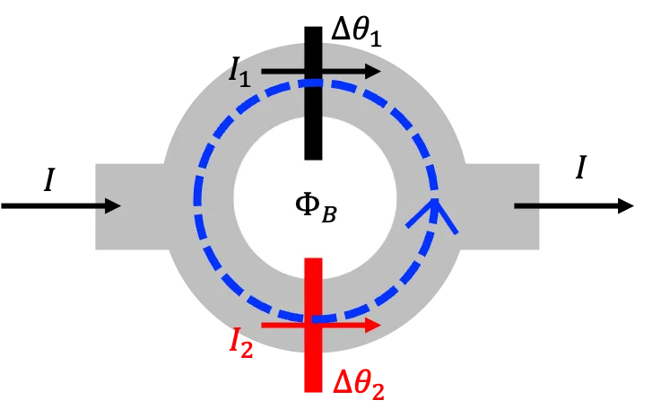
Insert the loop constraint
\[
\begin{aligned}
I&=I_c\!\left[
\sin\Delta\theta_1
+\sin\!\left(\Delta\theta_1-2\pi\frac{\Phi_B}{\Phi_0}+2\pi N\right)
\right]
=I_c\!\left[
\sin\Delta\theta_1
+\sin\!\left(\Delta\theta_1-2\pi\frac{\Phi_B}{\Phi_0}\right)
\right]
\end{aligned}
\]
Trigonometric identity
\[
\begin{gathered}
\sin a+\sin b
=2\cos\!\left(\frac{a-b}{2}\right) \sin\!\left(\frac{a+b}{2}\right) \quad \to \quad
I=
\underbrace{2I_c\cos\!\left(\pi\frac{\Phi_B}{\Phi_0}\right)}_{\equiv I_{SQUID}\left(\Phi_B \right)}
\sin\!\underbrace{\left(\Delta\theta_1-\pi\frac{\Phi_B}{\Phi_0}\right)}_{\equiv \varphi}
=I_{SQUID}\left(\Phi_B \right)\, \sin \varphi
\end{gathered}
\]
Josephson junction
\[ \begin{aligned} I&=I_c\sin\varphi,\quad L_J(\varphi) =\frac{\Phi_0}{2\pi I_c\cos\varphi} \end{aligned} \]SQUID
\[ \begin{aligned} I&=I_{\rm SQUID}(\Phi_B)\sin\varphi,\quad L_J(\Phi_B,\varphi) =\frac{\Phi_0}{2\pi I_{\rm SQUID}(\Phi_B)\cos\varphi} \end{aligned} \]SQUID · asymmetric
Asymmetric SQUID

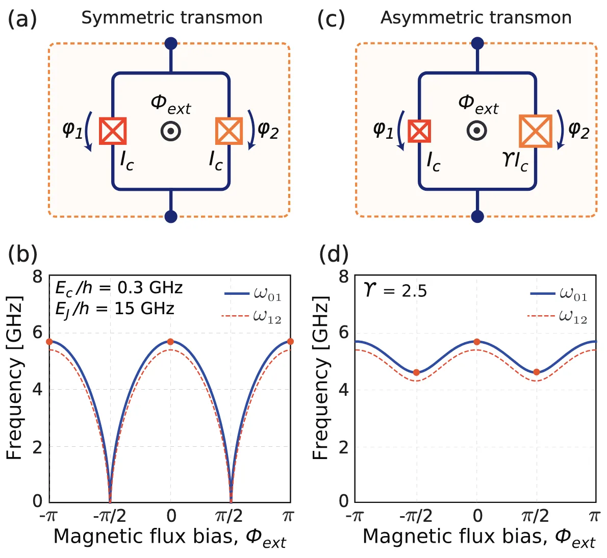
\[
\begin{aligned}
I&=I_{\rm SQUID}(\Phi_B)\sin\varphi,\\[-1pt]
L_{SQUID}(\Phi_B,\varphi)
&=\frac{\Phi_0}{2\pi \cdot 2I_c\cos\!\left(\pi\frac{\Phi_B}{\Phi_0}\right)\cdot\cos\varphi}
\end{aligned}
\]
Frequency follows the inductance
\[
\omega=\frac{1}{\sqrt{L_{\rm SQUID}\, C}}
\propto\sqrt{\cos\!\left(\pi\frac{\Phi_B}{\Phi_0}\right)}
\]
Asymmetric junctions
\[
\begin{gathered}
I_1=I_c,\qquad I_2=\gamma I_c,\\[2pt]
I=I_1\sin\Delta\theta_1
+\gamma I_1\sin\!\left(
\Delta\theta_1-2\pi\frac{\Phi_B}{\Phi_0}
\right),\\[3pt]
I_{\rm SQUID}(\Phi_B)
=I_c\sqrt{(1-\gamma)^2
+4\gamma\cos^2\!\left(\pi\frac{\Phi_B}{\Phi_0}\right)}
\end{gathered}
\]
Superconducting-qubit hardware layouts


Double-angle shadow evaporation (Dolan technique)

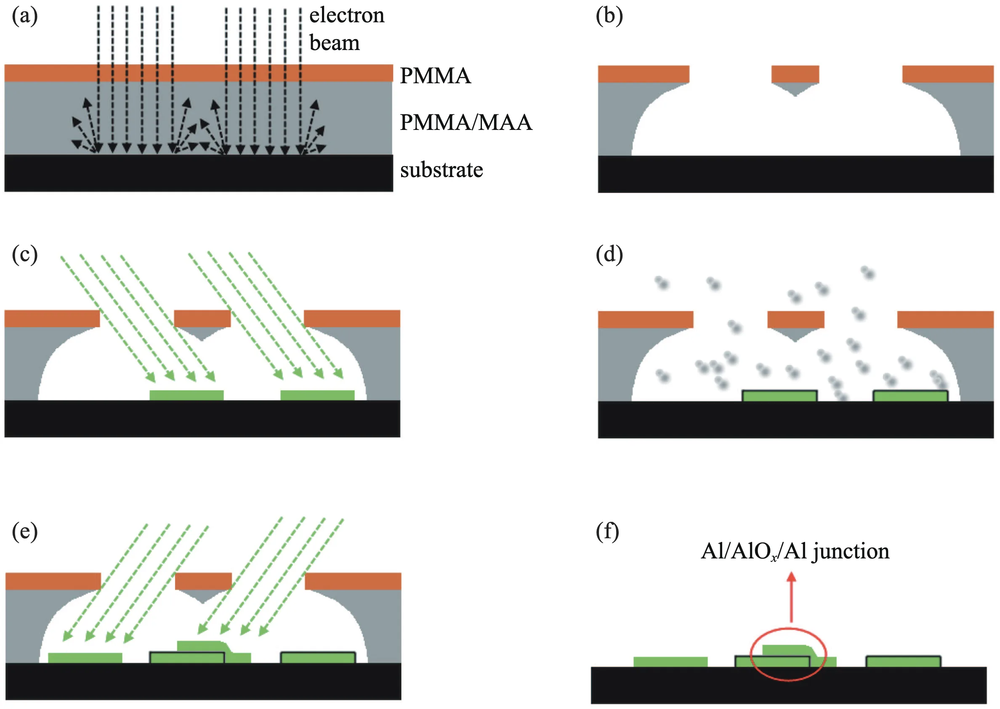
Y.-L. Wu et al., Chin. Phys. B 22, 060309 (2013), Fig. 2. DOI


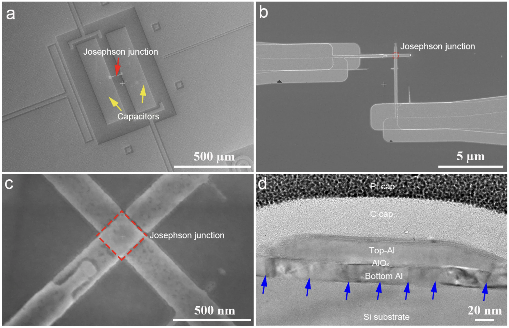
Noise
Relaxation and dephasing
\[
\Gamma_2=\tfrac12\,\Gamma_1+\Gamma_\varphi
\quad\Longleftrightarrow\quad
\frac{1}{T_2}=\frac{1}{2T_1}+\frac{1}{T_\varphi}
\]


P. Krantz et al., Appl. Phys. Rev. 6, 021318 (2019), Figs. 4 and 5(a). DOI
Where the fluctuators sit

Left: J. Lisenfeld et al., npj Quantum Inf. 5, 105 (2019), DOI. Right: W. D. Oliver and P. B. Welander, MRS Bull. 38, 816 (2013), DOI.

Inside a 2 nm AlOx barrier

S. Saito, NTT Technical Review 22(11), 7 (2024). DOI
A TLS is a double well

I. Siddiqi, Nat. Rev. Mater. 6, 875 (2021). DOI
Tuning the qubit through a TLS

P. V. Klimov et al., Phys. Rev. Lett. 121, 090502 (2018). DOI
Transmon with an epitaxial tunnel junction

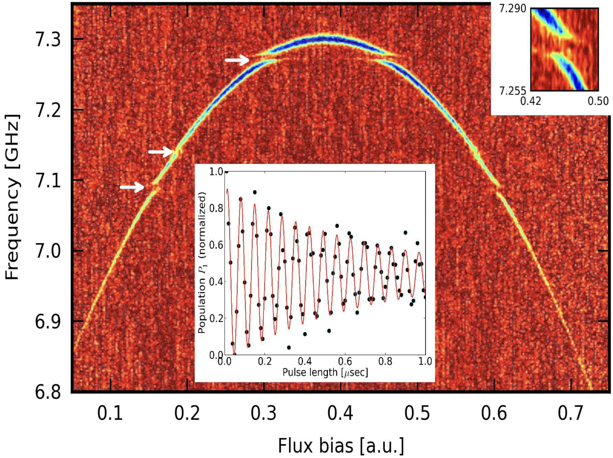
M. P. Weides et al., Appl. Phys. Lett. 99, 262502 (2011), Fig. 2. DOI · arXiv:1111.5083
\(T_1\) drifts in frequency and in time

P. V. Klimov et al., Phys. Rev. Lett. 121, 090502 (2018). DOI
An epitaxial barrier removes most TLS

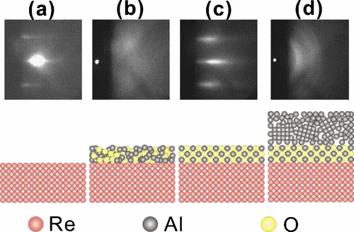

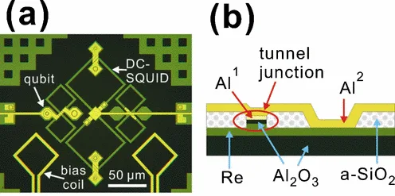

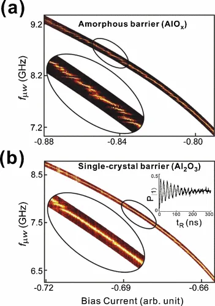
S. Oh et al., Phys. Rev. B 74, 100502(R) (2006): about 80% fewer TLS splittings; the rest is attributed to the interfaces. DOI
Quasiparticle Burst


Noise sources

Energy relaxation channels
TLS absorption
quasiparticle tunnelling
Purcell decay
phonons · package modes
surface dielectric loss
Phase decoherence channels
flux noise
charge noise
TLS frequency drift
critical-current noise
residual-photon ac Stark shift
\(1/f\) noise
I. Siddiqi, Nat. Rev. Mater. 6, 875 (2021). DOI
Where do errors enter the Hamiltonian?
Error channels · step 1 of 6
Every knob is also a noise channel
\[
\hat{\mathcal H}_0=\begin{pmatrix}E_0 & 0\\ 0 & E_1\end{pmatrix}
=\frac{E_0+E_1}{2}\,\mathbb I-\frac{\hbar\omega_{01}}{2}\,\sigma_z
\]
\[
\hat{\mathcal H}_0=-\frac{\hbar\omega_{01}}{2}\,\sigma_z
\]
The Hamiltonian depends on biases \(\lambda=\{n_g,\Phi,E_J,\ldots\}\), and each one fluctuates:
\[ \lambda(t)=\lambda_0+\delta\lambda(t) \] \[ \hat{\mathcal H}(\lambda_0+\delta\lambda) =\underbrace{\hat{\mathcal H}(\lambda_0)}_{\hat{\mathcal H}_0} +\underbrace{\hat O_\lambda\,\delta\lambda(t)}_{\Delta\hat{\mathcal H}(t)} +O\!\left(\delta\lambda^2\right), \qquad \hat O_\lambda\equiv\left.\frac{\partial\hat{\mathcal H}}{\partial\lambda}\right|_{\lambda_0} \] \[ \hat{\mathcal H}_0=-\frac{\hbar\omega_{01}}{2}\,\sigma_z, \qquad O_{ij}\equiv\langle i|\hat O_\lambda|j\rangle, \qquad O_{10}=O_{01}^{*} \] \[ \Delta\hat{\mathcal H}(t) =\delta\lambda(t)\begin{pmatrix}O_{00}&O;_{01}\\O_{10}&O;_{11}\end{pmatrix} =\delta\lambda(t)\left[\frac{O_{00}+O_{11}}{2}\,\mathbb I -\frac{O_{11}-O_{00}}{2}\,\sigma_z +\frac{O_{10}+O_{01}}{2}\,\sigma_x+\frac{O_{10}-O_{01}}{2i}\,\sigma_y\right] \] \[ =\underbrace{-\frac{\hbar}{2}\,\delta\omega_{01}(t)\,\sigma_z}_{\Delta\hat{\mathcal H}_\parallel\ \text{(longitudinal)}} +\underbrace{\delta\lambda(t)\left(\frac{O_{10}+O_{01}}{2}\,\sigma_x+\frac{O_{10}-O_{01}}{2i}\,\sigma_y\right)}_{\Delta\hat{\mathcal H}_\perp\ \text{(transverse)}} \]
\[
\delta\omega_{01}(t)\equiv\frac{O_{11}-O_{00}}{\hbar}\,\delta\lambda(t)
\]
The \(\mathbb I\) term moves both levels together, a global phase, and is dropped.
Noise chain · step 4 of 13
Longitudinal noise moves the frequency
\[
\delta\omega_{01}(t)\equiv\frac{O_{11}-O_{00}}{\hbar}\,\delta\lambda(t)
\]
\[
\Delta\hat{\mathcal H}_\parallel=-\frac{\hbar}{2}\,\delta\omega_{01}(t)\,\sigma_z
\]
\[
\hat{\mathcal H}_0+\Delta\hat{\mathcal H}_\parallel=-\frac{\hbar}{2}\left[\omega_{01}+\delta\omega_{01}(t)\right]\sigma_z
\]
\[
\langle0|\hat{\mathcal H}_0+\Delta\hat{\mathcal H}_\parallel|1\rangle=0\quad\Longrightarrow\quad|0\rangle\nleftrightarrow|1\rangle
\]
\[
\phi(t)=\int_0^t\left[\omega_{01}+\delta\omega_{01}(t')\right]dt'
\]
\[
\text{random relative phase}\quad\Longrightarrow\quad\text{pure dephasing}
\]

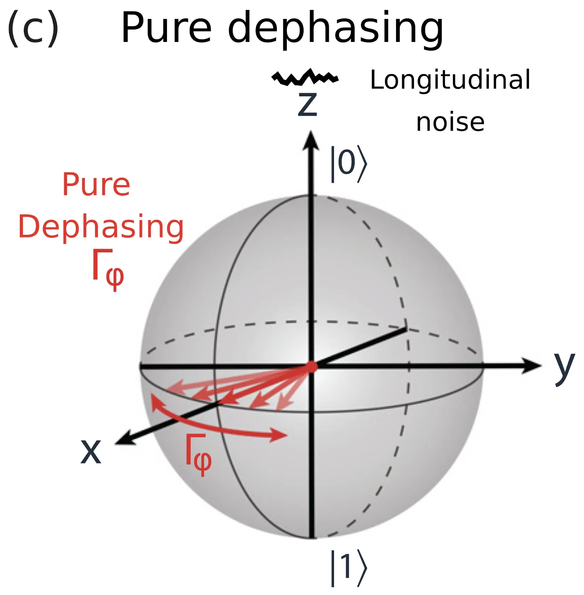
Noise chain
Why low-frequency noise is mostly \(\sigma_z\)
One low-frequency component of the noise (\(O_{01}\) real):
\[ \delta\lambda(t)=\delta\lambda_0\sin\omega_L t,\qquad \omega_L\ll\omega_{01} \] \[ \Delta\hat{\mathcal H}(t)=\hat O_\lambda\,\delta\lambda_0\sin\omega_L t =\delta\lambda_0\sin\omega_L t\left[-\frac{O_{11}-O_{00}}{2}\,\sigma_z+O_{01}\,\sigma_x\right] \]Interaction picture, \(\hat U=e^{-i\hat{\mathcal H}_0t/\hbar}\):
\[ \sigma_z\ \to\ \hat U^\dagger\sigma_z\hat U=\sigma_z \] \[ \sigma_x\ \to\ \hat U^\dagger\sigma_x\hat U=\sigma_x\cos\omega_{01}t+\sigma_y\sin\omega_{01}t \] \[ \Delta\hat{\mathcal H}_I(t)=\delta\lambda_0\sin\omega_L t\left[-\frac{O_{11}-O_{00}}{2}\,\sigma_z +O_{01}\left(\sigma_x\cos\omega_{01}t+\sigma_y\sin\omega_{01}t\right)\right] \] \[ =-\frac{O_{11}-O_{00}}{2}\,\delta\lambda_0\sin\omega_L t\;\sigma_z +\frac{O_{01}\,\delta\lambda_0}{2}\Big[\sigma_x\big(\sin(\omega_{01}+\omega_L)t-\sin(\omega_{01}-\omega_L)t\big) +\sigma_y\big(\cos(\omega_{01}-\omega_L)t-\cos(\omega_{01}+\omega_L)t\big)\Big] \] \[ \sigma_x,\ \sigma_y:\ \ e^{\pm i(\omega_{01}-\omega_L)t},\ \ e^{\pm i(\omega_{01}+\omega_L)t}\ \ \text{fast} \qquad\qquad \sigma_z:\ \ \sin\omega_L t\ \ \text{slow} \]
\[
\overset{\text{RWA}}{\Longrightarrow}\quad
\Delta\hat{\mathcal H}_I(t)\simeq-\frac{\hbar}{2}\,\delta\omega_{01}(t)\,\sigma_z,
\qquad
\delta\omega_{01}(t)=\frac{O_{11}-O_{00}}{\hbar}\,\delta\lambda(t)
\]
A complex \(O_{01}\) only rotates the \(x\)–\(y\) axes. \(\sigma_x,\sigma_y\) survive only for noise near \(\omega_{01}\), i.e. \(S_\lambda(\omega_{01})\): relaxation, next page.
Relaxation · step 1 of 5
Fermi's golden rule
Start in \(|1\rangle\) and let the transverse part act. In the interaction picture:
\[ \Delta\hat{\mathcal H}_I(t)=e^{i\hat{\mathcal H}_0t/\hbar}\,\Delta\hat{\mathcal H}(t)\,e^{-i\hat{\mathcal H}_0t/\hbar} \] \[ i\hbar\,\frac{\partial}{\partial t}\hat U_I(t,0)=\Delta\hat{\mathcal H}_I(t)\,\hat U_I(t,0) \]To first order in \(\Delta\hat{\mathcal H}\):
\[ \hat U_I(t,0)=\mathcal T\exp\!\left[-\frac{i}{\hbar}\int_0^t\Delta\hat{\mathcal H}_I(t')\,dt'\right] \] \[ \simeq\mathbb I-\frac{i}{\hbar}\int_0^t\Delta\hat{\mathcal H}_I(t')\,dt' \]so the amplitude is a Fourier component of the noise:
\[
\begin{aligned}
\langle0|\hat U_I(t,0)|1\rangle
&\simeq-\frac{i}{\hbar}\int_0^t e^{-i\omega_{01}t'}\langle0|\Delta\hat{\mathcal H}(t')|1\rangle\,dt'\\
&=-\frac{i}{\hbar}\,O_{01}\int_0^t\delta\lambda(t')\,e^{-i\omega_{01}t'}\,dt'
\end{aligned}
\]
The probability is a double integral over the noise correlation:
\[ P_{1\to0}(t)=\left|\langle0|\hat U_I(t,0)|1\rangle\right|^2 \] \[ =\frac{\left|O_{01}\right|^2}{\hbar^2}\int_0^t\!\!\int_0^t \left\langle\delta\lambda(t'')\delta\lambda(t')\right\rangle e^{-i\omega_{01}\left(t'-t''\right)}dt'dt'' \]Stationary noise depends only on \(\tau=t'-t''\), so one integral gives a factor \(t\):
\[ P_{1\to0}(t)=\frac{\left|O_{01}\right|^2}{\hbar^2}\;t\int_{-\infty}^{\infty} \left\langle\delta\lambda(0)\delta\lambda(\tau)\right\rangle e^{-i\omega_{01}\tau}d\tau \]
\[
\Gamma_{1\to0}=\frac{\left|\left\langle0\left|\hat{O}_\lambda\right|1\right\rangle\right|^2}{\hbar^2}\,S_\lambda(\omega_{01})
\]
Error channels · step 2 of 6
The coupling operators of this circuit
Differentiate \(\hat{\mathcal{H}}=4E_C\left(\hat{n}-n_g\right)^2-E_{J,\mathrm{eff}}(\Phi)\cos\hat{\varphi}\) once for each knob:
\[\hat{O}_{n_g}=\frac{\partial\hat{\mathcal{H}}}{\partial n_g}=-8E_C\left(\hat{n}-n_g\right)\]
\[\hat{O}_\Phi=\frac{\partial\hat{\mathcal{H}}}{\partial\Phi}=-\frac{dE_{J,\mathrm{eff}}}{d\Phi}\cos\hat{\varphi}\]
\[\hat{O}_{E_J}=\frac{\partial\hat{\mathcal{H}}}{\partial E_J}=-\cos\hat{\varphi}\]
\[\hat{O}_{V}\propto\hat{n}\quad\text{(any capacitive port)}\]
\[
\text{charge-like knobs}\ \to\ \hat{n},
\qquad
\text{junction-like knobs}\ \to\ \cos\hat{\varphi}
\]
Two operators cover the whole list, and we already know both: \(\hat{n}\) drives the qubit, \(\cos\hat{\varphi}\) is the Josephson term itself.
Suppression
Sweet spot, small overlap, selection rule
\[
\hat{O}_\lambda\equiv \frac{\partial \hat{\mathcal H}}{\partial \lambda}
\qquad\qquad
\underbrace{\frac{\partial\omega_{01}}{\partial\lambda}=\frac{\left\langle1\left|\hat{O}_\lambda\right|1\right\rangle-\left\langle0\left|\hat{O}_\lambda\right|0\right\rangle}{\hbar}}_{T_\varphi}
\qquad\qquad
\underbrace{\Gamma_1=\frac{\left|\left\langle0\left|\hat{O}_\lambda\right|1\right\rangle\right|^2}{\hbar^2}\,S_\lambda(\omega_{01})}_{T_1}
\]
1 · Sweet spot: \(\partial\omega_{01}/\partial\lambda=0\)
\[ \frac{\partial\omega_{01}}{\partial\lambda}=\frac{O_{11}-O_{00}}{\hbar}=0 \] \[ \delta\omega_{01}\simeq\frac12\,\frac{\partial^2\omega_{01}}{\partial\lambda^2}\,\delta\lambda^2 \]
\[
\Gamma_\varphi^{(1)}=0
\]
only at that bias
\(n_g=\tfrac12\), \(\Phi=0,\ \Phi_0/2\)
\(n_g=\tfrac12\), \(\Phi=0,\ \Phi_0/2\)
2 · Small overlap: far apart
\[ \psi_0,\ \psi_1\ \text{far apart} \] \[ \Longrightarrow\ d_{01}=\langle0|\hat O_\lambda|1\rangle\approx0 \] \[ \Gamma_1\propto|d_{01}|^2\to0 \]\(T_1\) · never exactly zero · at every bias
fluxonium 2018
fluxonium 2018
3 · Selection rule: odd × even = 0
\[ U(x)=U(-x)\ \Longrightarrow\ [\hat{\mathcal H},\hat P]=0 \] \[ \Longrightarrow\ \psi_0(x)\ \text{even},\ \ \psi_1(x)\ \text{odd} \] \[ \langle0|\cos\hat x|1\rangle=\int\underbrace{\psi_0}_{\rm even}\,\underbrace{\cos x}_{\rm even}\,\underbrace{\psi_1}_{\rm odd}\,dx=0 \] \[ \langle k|\hat x|k\rangle=\int\underbrace{x}_{\rm odd}\,\underbrace{\psi_k^2}_{\rm even}\,dx=0 \]even noise \((\cos x)\): no \(T_1\) · odd noise \((x)\): no first-order \(T_\varphi\)
fluxonium at \(\phi_{\rm ext}=\pi\), \(x=\phi-\pi\)
fluxonium at \(\phi_{\rm ext}=\pi\), \(x=\phi-\pi\)
What does a superinductor add?
Fluxonium as a physical circuit

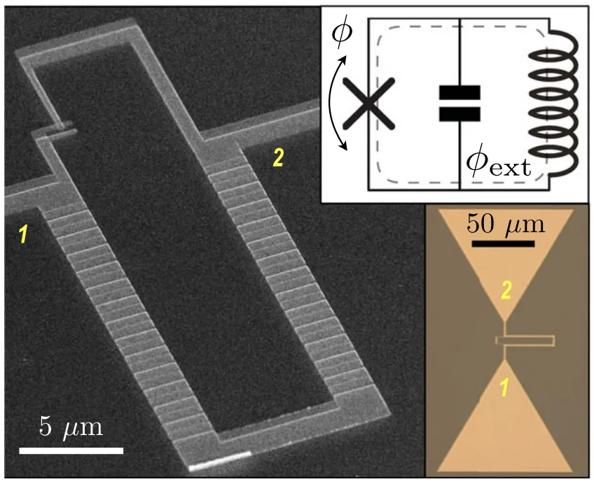

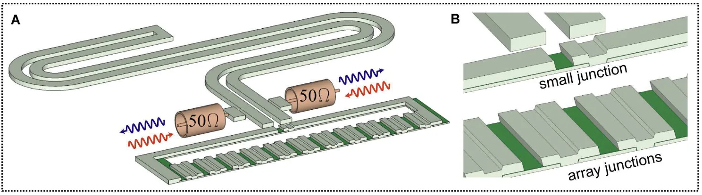

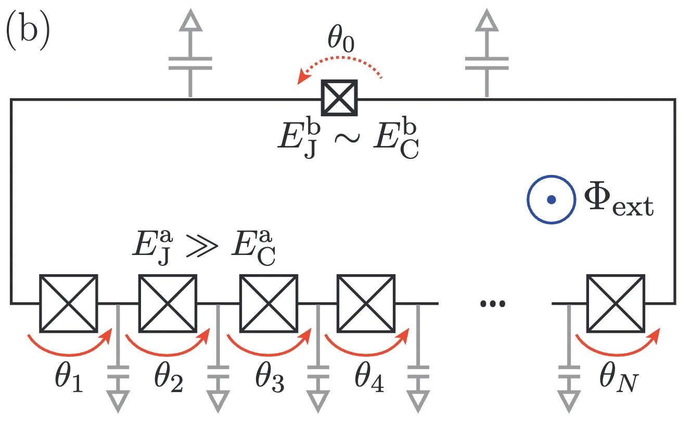
Put \(N\) identical junctions in series. With no phase slips, a total phase \(\Theta\) divides evenly:
\[ \theta_j=\frac{\Theta}{N},\qquad U=-\sum_{j=1}^{N}E_{J,a}\cos\theta_j=-NE_{J,a}\cos\frac{\Theta}{N} \]Each junction sits near the bottom of its own cosine, so expand:
\[ -NE_{J,a}\cos\frac{\Theta}{N}\approx-NE_{J,a}+\frac{E_{J,a}}{2N}\Theta^2 \]
\[
\frac{1}{2}E_L\Theta^2=\frac{E_{J,a}}{2N}\Theta^2
\qquad\Longrightarrow\qquad
E_L=\frac{E_{J,a}}{N}
\]
Each junction is still nonlinear; sharing the phase between \(N\) of them makes the chain linear to order \(\Theta^2/N^2\).


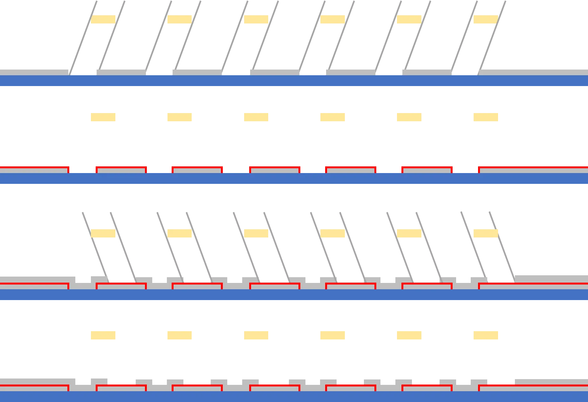
Fluxonium potential
L. B. Nguyen et al., Phys. Rev. X 9, 041041 (2019), Eq. (1); start values = device A, \(E_J=3\), \(E_L=1\) GHz (Table I). DOI
2018 PRL

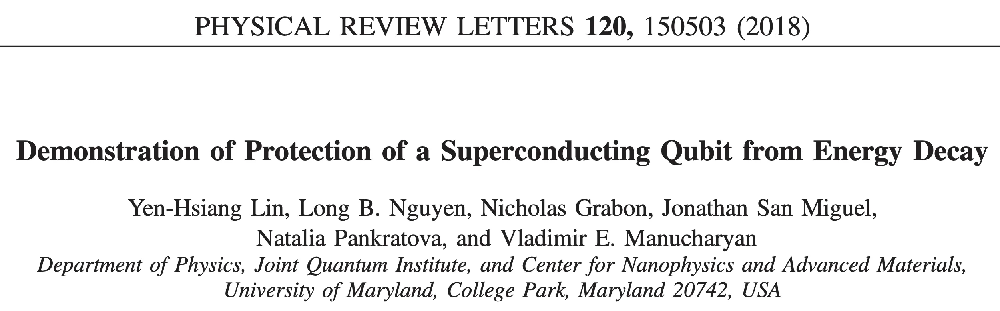
Lin et al., Phys. Rev. Lett. 120, 150503 (2018).
One atom · forbidden and allowed transitions

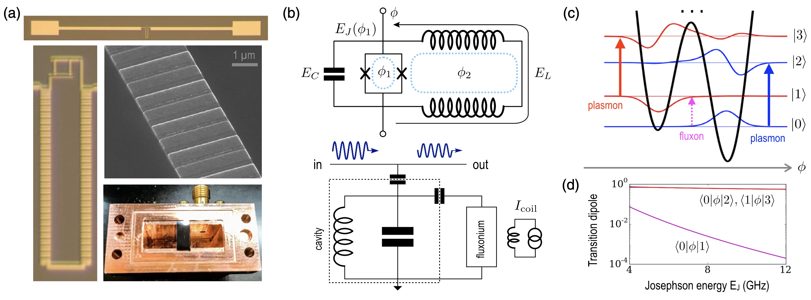
\[
d_{01}=\langle0|\hat O_\lambda|1\rangle\approx\langle\psi_L|\hat O_\lambda|\psi_R\rangle\ \longrightarrow\ 0
\]
different wells · exponentially small · forbidden
\[
|0\rangle\to|2\rangle,\ |1\rangle\to|3\rangle:\quad
\langle0|\hat\phi|2\rangle,\ \langle1|\hat\phi|3\rangle=\mathcal O(1)
\]
same well (plasmon) · allowed
Lin et al., Phys. Rev. Lett. 120, 150503 (2018), Fig. 1.
2018 · \(T_1\) long, \(T_2\) short
\[
\Gamma_2=\tfrac12\,\Gamma_1+\Gamma_\varphi
\quad\Longleftrightarrow\quad
\frac{1}{T_2}=\frac{1}{2T_1}+\frac{1}{T_\varphi}
\]


\[
\varepsilon\neq0\ \Longrightarrow\ \frac{\partial\omega_{01}}{\partial\Phi}\neq0
\ \Longrightarrow\ \delta\omega_{01}(t)\simeq\frac{\partial\omega_{01}}{\partial\Phi}\,\delta\Phi(t)
\ \Longrightarrow\ T_1>2\ {\rm ms},\qquad T_2\approx4\ \mu{\rm s}
\]
Lin et al., Phys. Rev. Lett. 120, 150503 (2018), Figs. 2 and 3(a).
2019 PRX

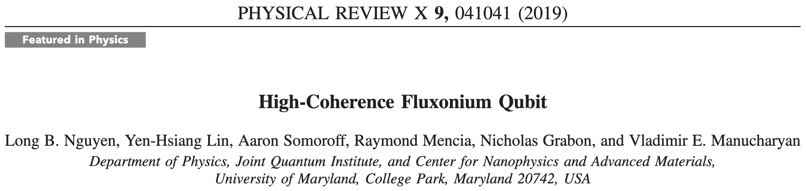
Half flux · a tunnelling doublet

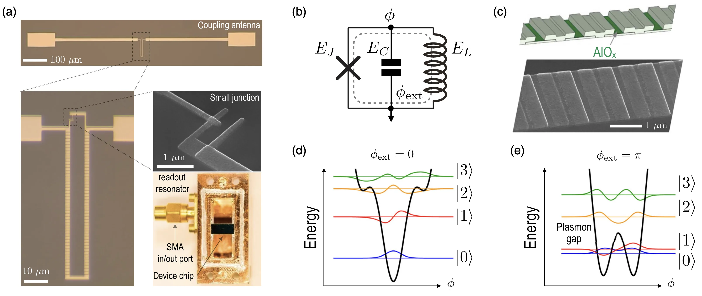
\[
|0\rangle\simeq\frac{|L\rangle+|R\rangle}{\sqrt2},\qquad
|1\rangle\simeq\frac{|L\rangle-|R\rangle}{\sqrt2}
\]
\[
\hbar\omega_{01}=\Delta_{\rm tunnel},\qquad
\frac{\omega_{01}}{2\pi}\approx0.17\text{–}0.83\ {\rm GHz}
\]
not a well offset · transmon: 4–8 GHz
\[
|2\rangle,|3\rangle\ \text{far}\ \Longrightarrow\ \omega_{12}\gg\omega_{01}
\]
large anharmonicity
Nguyen et al., Phys. Rev. X 9, 041041 (2019), Fig. 1.
Why the sweet spot removes dephasing

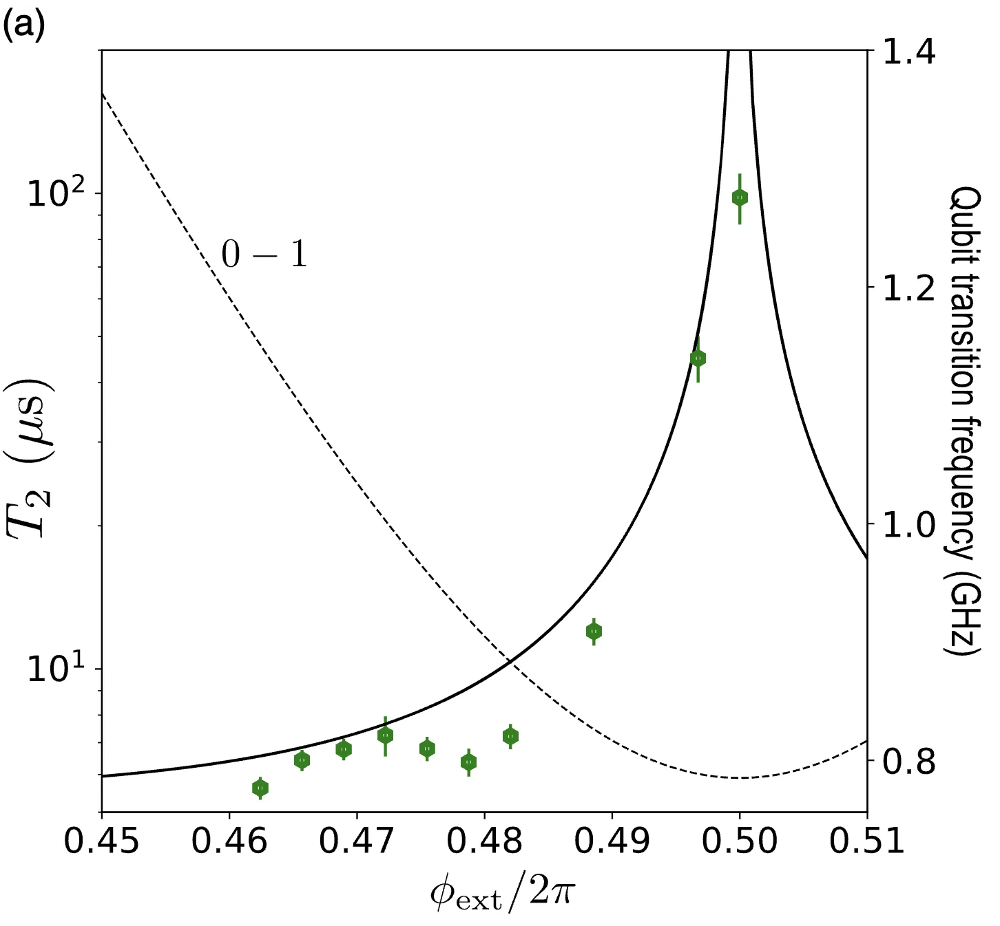
\[
\left.\frac{\partial\omega_{01}}{\partial\Phi}\right|_{\Phi_0/2}=0
\ \Longrightarrow\
\delta\omega_{01}\simeq\frac{\partial\omega_{01}}{\partial\Phi}\,\delta\Phi=0
\]
first-order flux noise no longer moves the qubit
\[
T_2:\ 3\text{–}6\ \mu{\rm s}\ \longrightarrow\ 100\ \mu{\rm s}
\]
Gaussian echo (1/f flux noise) → exponential
Why \(T_1\) is also long in 2019
\[
\text{2018: }\ d_{01}=\langle0|\hat O_\lambda|1\rangle\to0
\qquad\qquad
\text{2019: }\ \left|\langle0|\hat\phi|1\rangle\right|\approx\pi
\]
Not a small phase matrix element: a low frequency
\[ \hat H_C=4E_C\hat n^2 \] \[ \dot{\hat\phi}=\frac{i}{\hbar}\left[\hat H,\hat\phi\right]=\frac{8E_C}{\hbar}\,\hat n \]
\[
\left|\langle0|\hat n|1\rangle\right|=\frac{\hbar\omega_{01}}{8E_C}\,\left|\langle0|\hat\phi|1\rangle\right|
\]
\[
\phi_{01}\sim\pi,\quad\omega_{01}\to0\ \Longrightarrow\ n_{01}\to0
\]
\[
\text{small electric dipole}\ \Longrightarrow\ \text{weak dielectric loss}
\]
Nguyen et al., Phys. Rev. X 9, 041041 (2019), Fig. 4(a).
2018 PRL vs 2019 PRX
| 2018 PRL | 2019 PRX | |
|---|---|---|
| Wells | unequal double well | symmetric double well |
| Eigenstates | \(\psi_0\approx\psi_L,\ \psi_1\approx\psi_R\) | \((|L\rangle\pm|R\rangle)/\sqrt2\) |
| Transverse matrix element | \(d_{01}=\langle0|\hat O_\lambda|1\rangle\approx\langle\psi_L|\hat O_\lambda|\psi_R\rangle\to0\) | \(\left|\langle0|\hat\phi|1\rangle\right|\approx\pi\) |
| \(T_1\) mechanism | forbidden transition | low \(\omega_{01}\), \(\left|\langle0|\hat n|1\rangle\right|=\frac{\hbar\omega_{01}}{8E_C}\,\left|\langle0|\hat\phi|1\rangle\right|\) |
| Flux dephasing | strong, \(\frac{\partial\omega_{01}}{\partial\Phi}\neq0\) | zero at first order, \(\frac{\partial\omega_{01}}{\partial\Phi}=0\) |
| Main goal | protect against energy decay | high overall coherence |
Lin et al., Phys. Rev. Lett. 120, 150503 (2018); Nguyen et al., Phys. Rev. X 9, 041041 (2019).
PHYS598500 · Week 4